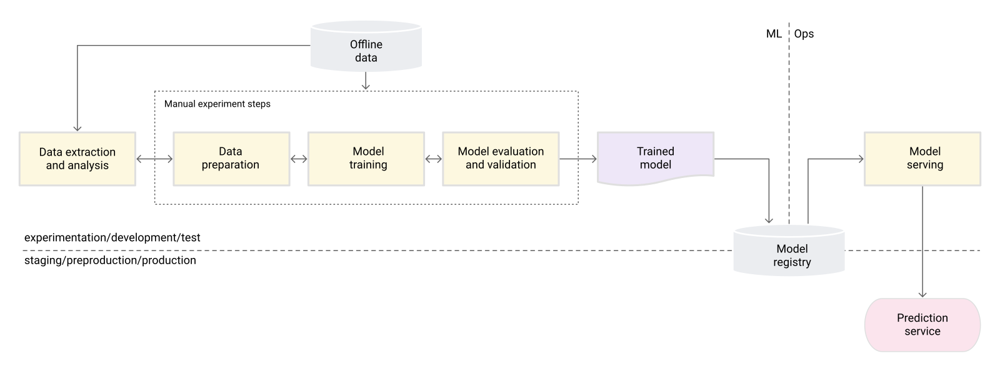

Start with a useful baseline
Before optimizing a model, define the decision it will support and the cost of being wrong. Compare it with a simple rule or existing process on the same held-out cases. A complex classifier that only beats a weak baseline on a convenient sample has not earned the extra operational burden. Google’s ML Crash Course separates training, validation and test data because reusing the same examples for model selection and final judgment overstates confidence.


For a document classifier, begin with a keyword rule and label a representative test set. Record error types that matter to users, such as missing a high-risk document, not just overall accuracy.
Check what the model could really know
Suppose a dataset includes a “review outcome” field assigned after a human makes the decision. A model using that field can score brilliantly offline while failing at the moment it must predict. This is label leakage. Split data by the real deployment unit and time, remove post-decision fields, and rerun the comparison. If near-duplicate documents cross the split, the test is also easier than production.
A classifier reaches 96% on a random split. After removing the post-review status and splitting by customer and month, it reaches 78%. The lower result is more useful: it describes a plausible future decision.
Treat deployment as another experiment
Google Cloud’s MLOps architecture separates model validation, pipeline automation and production monitoring. Log input quality, output distribution, error samples and versioned training data. Set thresholds that trigger investigation, not automatic retraining by default. A changed input distribution may be harmless; unchanged inputs can still conceal a changed relationship to outcomes.
Read the original sources
- Google ML Crash CourseDatasets, overfitting, evaluation and production ML foundations.
- Google Cloud MLOps architecturePipeline validation, deployment and monitoring patterns; primarily predictive ML.